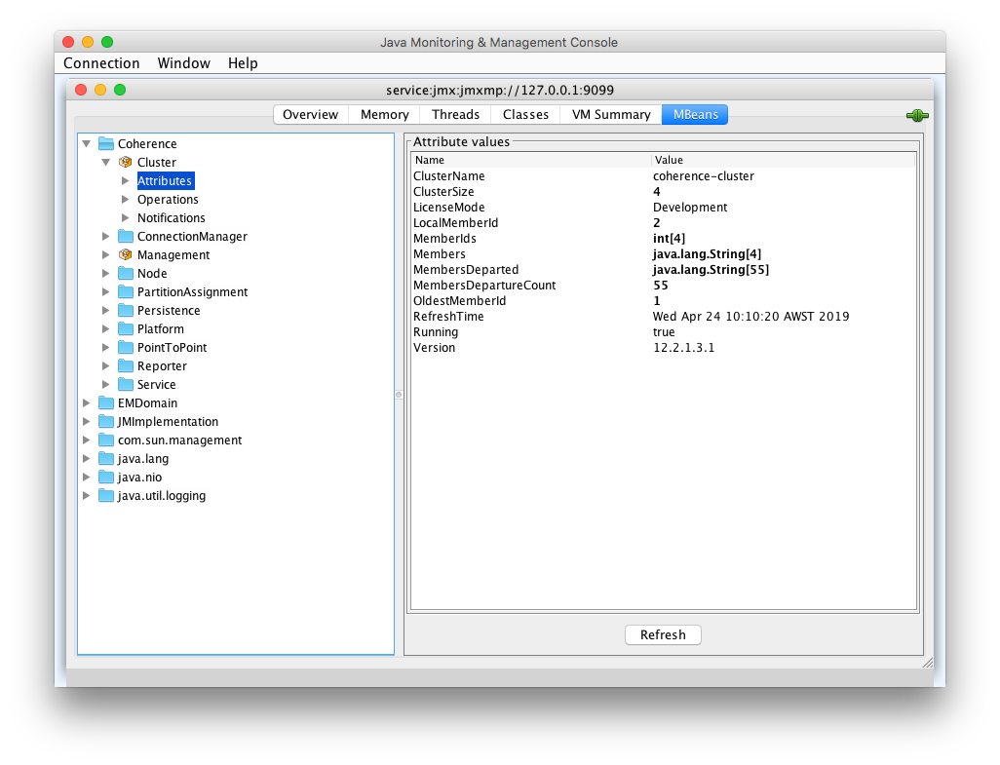
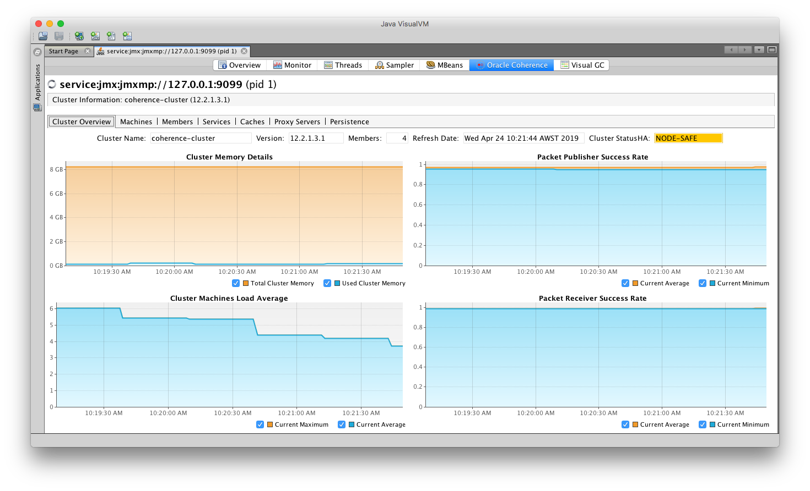

Access JMX in the Coherence Cluster Using JConsole and VisualVM
Java Management Extensions (JMX) is the standard way to inspect and manage enterprise Java applications. Applications that are exposed via JMX do not incur runtime performance penalty for doing so unless a tool is actively connected to the JMX connection, and only then in certain cases. The Java Tutorials provide introduction to JMX.
The Coherence documentation describes how to use JMX with Coherence.
All the capabilities of JMX with Coherence are also available with the operator.
This sample shows how to connect to a Coherence JMX MBean Server when using the Coherence Operator. The option --set store.jmx.enabled=true is used which creates an MBean Server pod from which you can connect to the operator.
By default, there is one replica for the MBean Server. You can create more MBean server pods by setting the store.jmx.replicas value. For example, --set store.jmx.replicas=2.
See here for information about connecting to Management over REST endpoint.
Return to Management samples / Return to samples
Prerequisites
- Install the Coherence Operator
Ensure you have installed the Coherence Operator using the instructions here.
- Download the JMXMP connector JAR
The JMX endpoint does not use RMI, instead it uses JMXMP. This requires an additional JAR on the classpath of the Java JMX client (VisualVM and JConsole). You can use curl to download the required JAR.
bash
curl http://central.maven.org/maven2/org/glassfish/external/opendmk_jmxremote_optional_jar/1.0-b01-ea/opendmk_jmxremote_optional_jar-1.0-b01-ea.jar \
-o opendmk_jmxremote_optional_jar-1.0-b01-ea.jar
This also can be downloaded as a Maven dependency if you are connecting through a Maven project.
xml
<dependency>
<groupId>org.glassfish.external</groupId>
<artifactId>opendmk_jmxremote_optional_jar</artifactId>
<version>1.0-b01-ea</version>
</dependency>
Installation Steps
- Install the Coherence cluster
Install the cluster with one MBean server pod:
bash
$ helm install \
--namespace sample-coherence-ns \
--name storage \
--set clusterSize=3 \
--set cluster=coherence-cluster \
--set imagePullSecrets=sample-coherence-secret \
--set prometheusoperator.enabled=false \
--set logCaptureEnabled=false \
--set store.jmx.enabled=true \
--set store.jmx.replicas=1 \
coherence/coherence
Note: There are many other store.jmx.* options which control other aspects of the MBean Server node.
Refer to the Coherence Operator values.yaml file
for more information.
After the chart is installed, instructions are displayed to help you utilize this feature. You can follow these instructions or use the commands.
-
Check whether the MBean server pod is running:
bash $ kubectl get pods -n sample-coherence-nsconsole NAME READY STATUS RESTARTS AGE coherence-operator-5899f6444b-tckm4 1/1 Running 0 1h storage-coherence-0 1/1 Running 0 29m storage-coherence-1 1/1 Running 0 28m storage-coherence-2 1/1 Running 0 27m storage-coherence-jmx-54f5d779d-svh29 1/1 Running 0 29mA pod prefixed with
storage-coherence-jmxis displayed in the output. -
Port forward the MBean server pod:
```bash $ export POD_NAME=$(kubectl get pods --namespace sample-coherence-ns -l "app=coherence,release=storage,component=coherenceJMXPod" -o jsonpath="{.items[0].metadata.name}")
$ kubectl --namespace sample-coherence-ns port-forward $POD_NAME 9099:9099 ```
Access the JMX endpoint at the URL service:jmx:jmxmp://127.0.0.1:9099.
- (Optional) Add data to a cache
Connect to the Coherence console and create a cache:
Note: If you do not carry out this step, then you will not see any CacheMBeans as described below.
bash
$ kubectl exec -it --namespace sample-coherence-ns storage-coherence-0 bash /scripts/startCoherence.sh console
At the Map (?): prompt, type cache test. This will create a cache in the service PartitionedCache.
Use the following to add 100,000 objects of size 1024 bytes, starting at index 0 and using batches of 100.
```bash bulkput 100000 1024 0 100
Mon Apr 15 07:37:03 GMT 2019: adding 100000 items (starting with #0) each 1024 bytes ... Mon Apr 15 07:37:15 GMT 2019: done putting (11578ms, 8878KB/sec, 8637 items/sec) ```
At the prompt, type size and it should show 100000.
Then, type bye to exit the console.
- Access through JConsole
Ensure you run JConsole with the JMXMP connector on the classpath:
bash
$ jconsole -J-Djava.class.path="$JAVA_HOME/lib/jconsole.jar:$JAVA_HOME/lib/tools.jar:opendmk_jmxremote_optional_jar-1.0-b01-ea.jar" service:jmx:jmxmp://127.0.0.1:9099
In the console UI, select the MBeans tab and then Coherence Cluster attributes. You should see the Coherence MBeans as below:

- Access through VisualVM
Ensure you run VisualVM with the JMXMP connector on the classpath:
bash
$ jvisualvm -cp "$JAVA_HOME/lib/tools.jar:opendmk_jmxremote_optional_jar-1.0-b01-ea.jar"
Note: If you have downloaded VisualVM separatley, then the executable is visualvm.
From the Applications tab in the VisualVM UI, right-click on Local and select Add JMX Connection.
Enter service:jmx:jmxmp://127.0.0.1:9099 for Connection and click OK.
A JMX connection is added. Double-click to open the new connection. You can see the Coherence MBeans under the MBeans tab. If you have installed the Coherence VisualVM plugin, you can also see a Coherence tab.

Refer to the Coherence MBean Reference for detailed information about Coherence MBeans.
Uninstall the Charts
Use the following command to delete the chart installed in this sample:
$ helm delete storage --purge
Before starting another sample, ensure that all the pods are removed from previous samples.
If you want to remove the coherence-operator, then include it in the helm delete command.